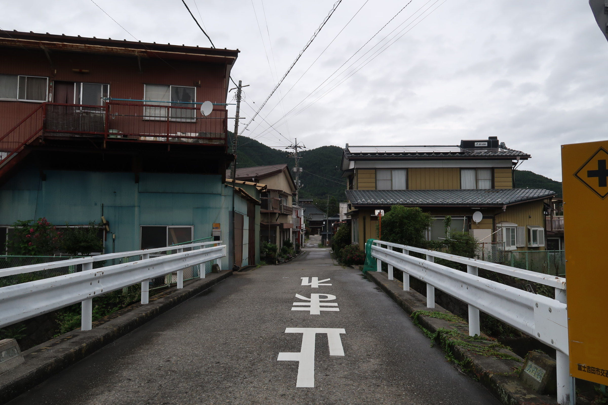
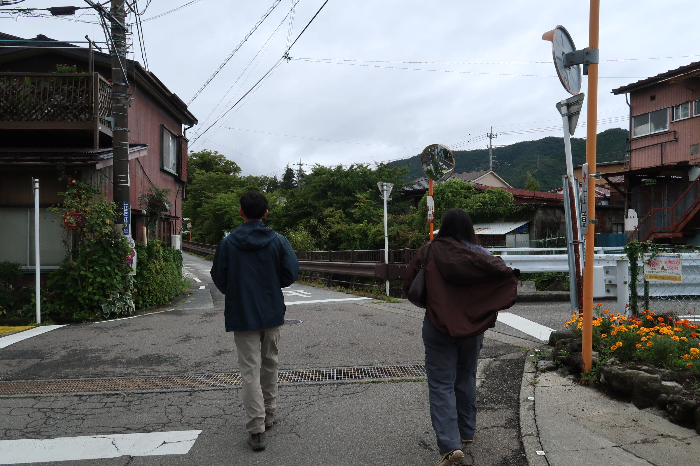
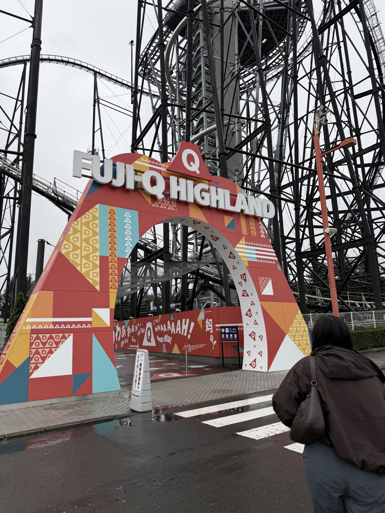

POSTCARDS FROM MY JOURNEY
Places worth remembering
A collection of photos and little memories from my trip to Japan. Each place has its own chapter in my diary. Select any photo to view the larger image.
Tokyo
A chapter for city scenery, little discoveries, and moments along the way.


Kyoto
Three glimpses of Kyoto, collected here to remember the journey.


Osaka
A few snapshots from Osaka and the details I want to keep.


Nara
A little collection of scenes and memories from Nara.


Fujiyoshida
Views and small moments from my time in Fujiyoshida.





